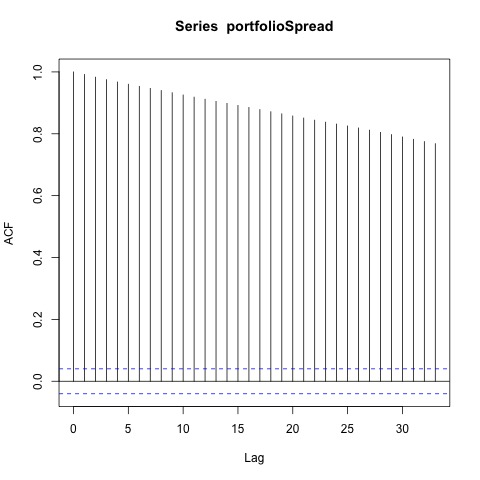
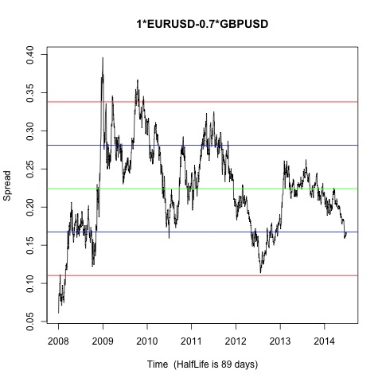

Johansen-Procedure "" "10pct" "5pct" "1pct" "r <= 1 |" 6.63 7.52 9.24 12.97 "r = 0 |" 19.6 17.85 19.96 24.6 "EURUSD.l2" "GBPUSD.l2" "constant" "EURUSD.l2" 1 1 1 "GBPUSD.l2" -0.7 0.16 -5.37 "constant" -0.23 -1.6 10.15
Augmented Dickey-Fuller Test p-value 0.123210627427755 